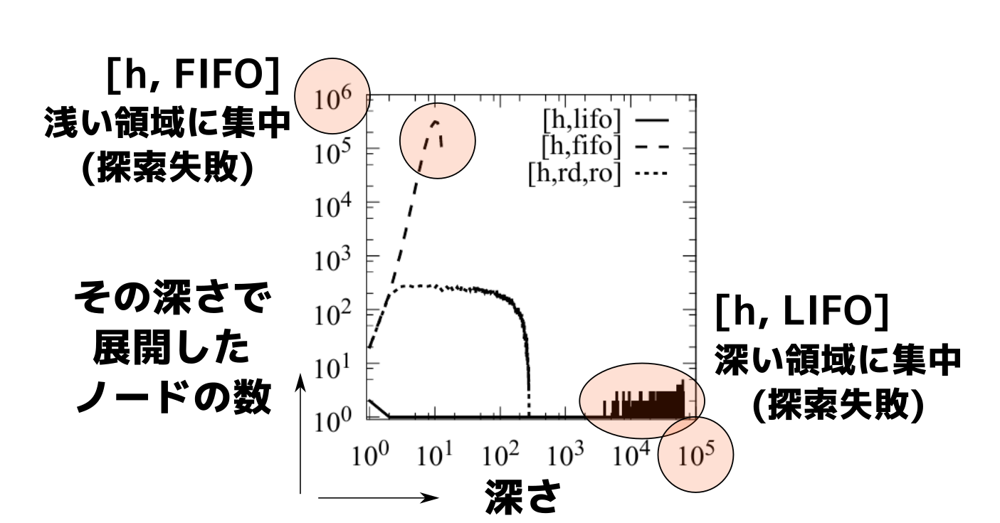
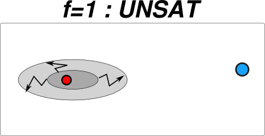
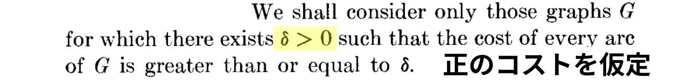
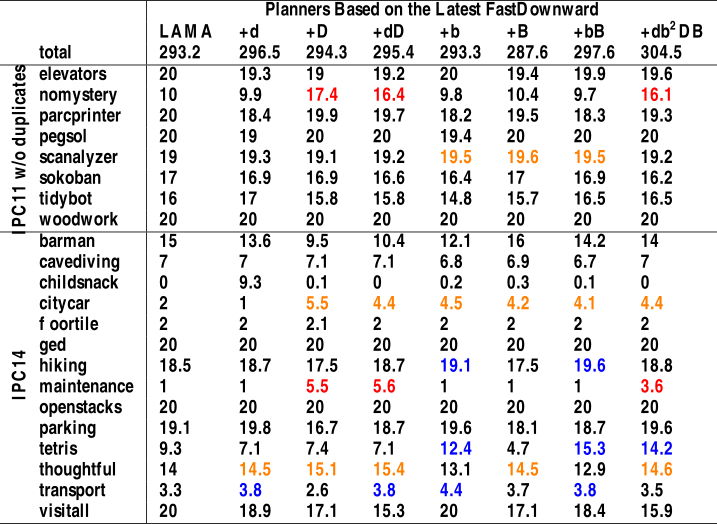

Diversification Mechanisms
for Best-First Search
(最良優先探索のための
探索非局在化手法)
Masataro Asai, The University of Tokyo
(Advisor: Alex Fukunaga)
1 背景: 大規模なグラフでの経路探索
1.1 古典プランニング問題 (決定的,完全情報) – Blocksworld 3min
1.2 アクション = 条件付き状態遷移
アクション (move ?X ?Y)
?X, ?Y : 変数。 値 BLOCK-A, BLOCK-B などを適用して使う
条件 と 効果 で構成される
条件 : 実行に必要な条件を表す命題
(clear ?X) : 積み木 ?X の上が空
(clear ?Y) : 積み木 ?Y の上に空
効果 : 前後の状態の 差分 を表す命題
(on ?X ?Y) を 追加 : ?Y の上は ?X
(clear ?Y) を 削除
(:action move :parameters (?X ?Y) :preconditions (and (clear ?X) ; (1) (clear ?Y)) ; (2) :effect (and (on ?X ?Y) ; (3) (not ; (4) (clear ?Y))))
モデリング言語 PDDL で記述
1.3 プランニング = グラフ探索
ノード : 状態 = 命題の集合 ⇒ (on A B), (clear A) など
辺 : アクション ⇒ (move A B) 等
*1 [Helmert, 2006] [Richter, 2010]
2 発表概要
上記の グラフ上の知識あり経路探索 のための高速化手法と解析
最良優先探索アルゴリズム の 探索非局在化手法 による高速化を研究
- (3章) A* のタイブレークと探索空間の分析
- (4章) タイブレークによる A* の高速化
- (5章) 最適解探索のタイブレークを理解する新しい枠組み、それによる高速化
- (6章) 充足解探索の タイブレーク手法 と 探索非局在化手法 の統合、それによる高速化
- (7章) BIP:新たな非局在化手法を用いた高速化
3 (3章) A*のタイブレークの分析
グラフの最小コスト経路探索:
初期ノード から
ゴールノード への
最小コスト経路探索
3.1 最小コスト経路探索 の主要な手法 が A*
3.2 A*におけるタイブレーキング:
3.3 タイブレーキングに関する「常識」
同じ fmin なノードが複数あったときどうする?
| 1968 Hart, Nilsson and Raphael → | h-based tiebreaking [ h ] : |
|---|---|
| (最初のA*の論文) | – h値が小さなものを選択 |
| 1984 Pearl (教科書) → | *"Break ties arbitrarily"* : |
| – 「どの手法でも性能にあまり影響しない」 | |
| 1985 Korf → | LIFO tiebreaking [LIFO] : |
| – 最後に生成したノードを選択 | |
| 最近は… | |
| 2007 Hansen and Zhou | [ h ] "が一番うまく行くと |
| 一般的に知られている" | |
| 2010 Holte | [ h ] "がよく使われる" |
[ h ] タイブレーキングが「常識」→ だが、本当に正しいのか？
3.4 そもそも [ h ] は タイブレークの指定として不十分
f も h も同じノードが複数ある場合どうするのか?
→ 二段階のタイブレーク法 X が必要 : 配列表記して [ h , X ]
(例) [ h , LIFO ] を使うA*の動作とは?
- 常に fmin なノードを選ぶ。
- ただし 複数ノードが fmin なら, hmin のノードを選ぶ (第一段階).
まだ 複数のノードがあるなら, LIFOに従い最後に生成したノードを選ぶ (第二段階).
( LIFO キューは常に1つのノードを返すのでコレ以上は必要なし )
| 古典プランニングState-of-the-Art Fast Downward | [ h, FIFO (論文に明記なし)] |
| (Richter et.al, 2010) | |
| 15/24パズルのState-of-the-Art ソルバ | [ h, LIFO (論文に明記なし)] |
| (2012 Burns et.al.) |
実装の詳細であり 書くほどのことでもない という認識
(下界関数の改善やA*自体の拡張など他に注目しがち)
3.5 実際は、 タイブレーク法は 重要 ゆっくり
標準ベンチマーク問題集では、
探索時間のほとんどは タイブレークのみによって制御される.
探索空間中 ほとんどの
ノードが f=f* (Final Plateau).
(Plateau = 同じf値を持つノード集合. 小さい順に探索して最後だからFinal)
A*の挙動のほとんどは
実はタイブレークだけによって決まる。
3.6 第二段階のタイブレークは重要か？
| Tiebreaking | 説明 | Solved |
|---|---|---|
| ［criterion1, criterion2 ］ | Instances | |
| ［ h, FIFO ］ | Fast Downwardの標準設定 | |
| ［ h, LIFO ］ | 同じ fmin → 最小の h を選ぶ | |
| 同じ hmin → LIFO で選ぶ |
1104題の IPC (International Planning Competition) ベンチマーク問題集
30min, 2GB の資源制限 ヒューリスティック関数は Landmark-Cut (Helmert2008)
Fast Downward : State-of-the-Art 探索ソルバの名前
3.7 第二段階のタイブレークは重要か？ → 重要だった!
| Tiebreaking | 説明 | Solved |
|---|---|---|
| ［criterion1, criterion2 ］ | Instances | |
| ［ h, FIFO ］ | Fast Downwardの標準設定 | 558 |
| ［ h, LIFO ］ | 同じ fmin → 最小の h を選ぶ | 565 |
| 同じ hmin → LIFO で選ぶ |
1104題の IPC (International Planning Competition) ベンチマーク問題集
30min, 2GB の資源制限 ヒューリスティック関数は Landmark-Cut (Helmert2008)
Fast Downward : State-of-the-Art 探索ソルバの名前
［h, LIFO ］ は ［h, FIFO ］ より速い
第二タイブレークは重要!
3.8 いつどのように早い？ ドメイン (問題セット) ごとに比較
( 1104題 = (20〜50問)×(35種類の問題集))
違いが出たドメインは
Openstacks & Cybersec
LIFO は FIFO より 10 倍速い
(他のドメインでは凡そ同じ)
3.9 Openstacks & Cybersec は何が特別なのか?
- 多くのIPCベンチマークドメインは アクションのコスト=1 (パズルが多い)
- 「トラックのドアを開く」と「運転」のコストが同じ? → 不自然
- 一方 Openstacks/Cybersec: 多くの ゼロコスト エッジ が含まれる
- 実問題に近い 、限定された資源を最小化するモデルになっている
輸送・配達問題 を 燃料を最小化する ようにモデル化
「運転」アクション以外は ゼロコスト (例: 荷物の受け渡しに燃料は必要ない)
Openstacks は 工場で同時生産する製品数を最小化 (Fink and Voss, 1999)
製品ごとに専有区画 stack を消費。 stack を使わない行為はゼロコスト
Cybersec(urity) も実問題由来 (BAMS 検証システム, Boddy et. al. 2005)
企業ネットワークを自動攻撃, データ奪取に必要なパスワード解析回数を最小化
Parametric Complexity Theory では, プランニング問題が ゼロコストを含む場合はPara-NP-hard, 正コストのみの場合 W2-complete (Aghighi 2015)
3.10 ゼロコストがあると h によるタイブレークが働かない
← 前回の絵より狭い定義の final plateau : f=f*, h=0
Openstacks と Cybersec では
ほぼ全てのノードが h=0.
⇒ h-タイブレーキングは
全く効果がない
⇒探索は 第二タイブレーク法
LIFO or FIFO だけが支配
LIFOを上回る性能を達成するためには, このFinal Plateauの分析が必要。
3.11 Final Plateau の分析
3.12 Final Plateau の分析
3.13 Final Plateau の分析
3.14 ほぼ全ての辺がゼロコストだと…
4 (4章) Plateau の中の Depth (深さ) を用いた A* の高速化
初期ノードからの深さとは異なる
4.1 Depthは解の最適性に影響しない
Final Plateau f=f* では, どのゴールもコスト最適 で、深さは関係ない
← どの辺もゼロコストだから.
従って 探索する時に深さに偏りがあるのは良くない.
4.1.1 例えば: 常に浅いところから探索するのは良くない
4.1.2 例えば: 常に深いところから探索するのも良くない
4.2 深さ非局在化 : 乱択深さ (Random Depth) Tiebreaking
4.3 Woodworking問題での深さの分布
4.4 Woodworking問題での深さの分布
4.5 Woodworking問題での深さの分布

4.6 Woodworking問題での深さの分布
4.7 Iterative Depth: RandomDepth の決定的バージョン
class DepthBuckets: def __init__(self): self.buckets = [] self.depth = 0 # 内部カウンタ def insert(self, elem): self.buckets[elem.parent.depth+1].append(elem) def expand(self): node = self.buckets[self.depth].pop() self.depth = self.depth - 1 if (self.depth < 0): # 深さ0に到達したら self.depth = len(self.buckets) # 最大深さにリセット return node
決定的アルゴリズムであるため分析が容易
4.8 Forest / No-exhaust assumption による理論的結果
理論的結果:
- 仮定1: Plateau上のグラフが固定分岐数の森である (forest assumption)
- 仮定2: 探索中にどの深さのbucketも空にならない (no-exhaust assumption)
- このとき、最大深さが$D$ならば、深さ$d$のbucket の展開回数は $D-d$に従う
- $D-d$: 深さに対して線形
- FIFO/LIFOは深さによる展開回数が指数的に異なる可能性あり
4.9 理論的結果と実験的結果の一致
実験的結果に一致 (上の仮定はある程度妥当):
4.10 結果: A*の性能をタイブレーキングを変えるだけで改善!!
計1724問中, 1題あたり2GBメモリ制限,30分以内に解けた問題の数 (論文、表5.5.2)
| Fast Downward | 提案手法 | |
|---|---|---|
| 問題セット | State-of-the-Art 探索システム | (10回の平均) |
| IPC1 Instances (1104) | 558 | 571.4 |
| Zerocost Instances(680) | 256 | 288.1 |
| 合計 (1724) | 814 | 859.5 ( + 45) |
IPC1 : International Planning Competition で使われる 高次元グラフ探索ベンチマーク
IPC=(20〜50問)×(35種類の問題集) Zerocost=(20〜50問)×(28種類の問題集)
それぞれの問題集は全く異なる性質の 最適化問題をモデル化
問題番号が進むと 指数的に難しくなる
45問 多く解ける = 速い
4.11 まとめ (3,4章の貢献内容)
- 既存のタイブレーキングのきちんとした定量的評価
- 論文にはさらに詳細な実験結果あり
- Final Plateauを詳細に分析
- 深さに偏りがあるのは良くない
- 乱択(RandomDepth) 及び 決定的(IterativeDepth) 深さ非局在化タイブレーク法
- 性能向上を達成
5 (5章) A* のタイブレークの一般化 4min
なぜ RandomDepth/IterativeDepth は成功したのか?
5.1 A* の動作 (おさらい)
5.1.1 A* の動作 (おさらい)
5.1.2 A* の動作 (おさらい)
5.1.3 A* の動作 (おさらい)
- 解の最適性: 経路の コストの和 が最小 → 経路の長さ はいくら長くても良い
- A*のplateau: 同じコストを持つノード集合 → 特にplateau内では いくらでも長くて良い
- 実は A* は plateau内では(経路の長さを気にしない)充足解探索をしている (充足解探索: 最短でなくて良い経路探索)
5.2 A* を 充足解探索の繰り返し と再定義
while true satisficing_search( plateau(f)) if plateau (f) is SAT; then return solution else Increase f
- A* $[ f, \text{fifo} ]$: 知識なし幅優先探索 [fifo] を それぞれの plateau(f) で実行 , 故に遅い
A* $[ f, h, \text{fifo} ]$: GBFS (貪欲最良優先探索) [h, fifo] を それぞれの plateau(f) で実行
GBFS (貪欲最良優先探索): 経路の充足解探索の基本的な手法
A* と同じくノードをOPENリストに保存。 ただし、 h が小さい順に展開 (f=g+h は用いない)
5.2.1 A* as 充足解探索
while true satisficing_search( plateau(f)) if plateau (f) is SAT; then return solution else Increase f
5.2.2 A* as 充足解探索
while true satisficing_search( plateau(f)) if plateau (f) is SAT; then return solution else Increase f

5.2.3 A* as 充足解探索
while true satisficing_search( plateau(f)) if plateau (f) is SAT; then return solution else Increase f
5.2.4 A* as 充足解探索
while true satisficing_search( plateau(f)) if plateau (f) is SAT; then return solution else Increase f
Implication:
- 完全性を保つ充足解探索手法 であれば なんでも 最適解探索に埋め込める
- A* の f 値が許容的であれば、解は常に最適
5.3 知見の応用: 無限グラフ上での A* の完全性
無限グラフでのA*の完全性: 有限コストの解が存在する場合、有限時間で発見する
既存の証明は ゼロコスト問題では成り立たない
Hart et al. (1968): 
Dechter and Pearl (1985):

理論的結果: ゼロコスト問題でのA*の完全性はタイブレーキングに依存する
(P1) $f < f^*$なる plateau(f) のサイズに上界がない時, A∗ は終了しない
(P2) $\forall f < f^∗$でplateau(f) が有限である際
- 完全性は plateau(f*) でのタイブレークに依存
5.3.1 無限グラフ上での A* の完全性
(P2) $\forall f < f^∗$でplateau(f) が有限である際
完全性は plateau(f*) でのタイブレークに依存
正しくは, タイブレークのために用いられる充足解探索アルゴリズムの完全性に依存
| 条件 | |
|---|---|
| FIFO [f, fifo] | 最短経路解の深さ以下で分岐度が有限 |
| → なぜなら 幅優先探索[fifo]がそれを必要とするため | |
| LIFO [f, lifo] | plateau(f*) が有限 |
| → なぜなら 深さ優先探索[fifo]がそれを必要とするため | |
| Random Order [f, ro] | 常に確率的完全 |
| → なぜなら [ro] が無限グラフで確率的完全[Valenzano AAAI16] |
A*が充足解探索の繰り返しである と再定義することで、
充足解探索の理論的結果を最適解探索に援用可能!
5.4 最適解探索に充足解探索を「埋め込む」
最適解探索のタイブレークに充足解探索用の評価関数(FFヒューリスティック)を用いる
→充足解探索を「埋め込む」結果、大幅な性能向上
| (論文、表5.5.4) | LMcut | M&S |
|---|---|---|
| 通常の手法 $[f,h,\text{lifo}]$ | 844 | 797 |
| 埋め込みあり | 911.9 | 832.3 |
5.5 まとめ (5章の貢献内容)
- A* を 充足解探索の繰り返し と再定義
- この視点の利点:
- 充足解探索の理論的性質を、 最適探索の理論的性質を調べる のに利用
- 最適解探索に充足解探索を埋め込める: 性能向上
- この視点の利点:
→ 充足解探索性能を上げれば最適解探索の性能も上がる
以降 充足解探索のみ考えることとする
6 (6章) 充足解探索の タイブレーク と 探索非局在化手法 の統合 4min
- GBFS (貪欲最良優先探索) : 充足解探索手法の基本的アルゴリズム
評価関数 h によってノードをソートし、 h が最小のノードを展開
ただし、 h は ゴールノードまでの距離の見積もり
(A*と異なり、下界であることを保証しない: 非許容的)
- GBFSの 探索非局在化手法 とは
充足解探索は 非許容的 h を使う ＝ hが下界でない値を返すことがある
GBFSはhを貪欲に信頼 → 既存の探索非局在化手法 は hを無視して最悪ケースを回避
6.1 背景
探索非局在化手法は たくさん ある
- Diverse BFS (Imai, Kishimoto '11) — 複雑な指標を使って探索を非局在化
- Monte-Carlo Random Walk (MRW, Nakhost and Müller '09) — 一定確率でランダムウォーク+様々な追加
- Epsilon-greedy GBFS (Valenzano '14) — 時々ノードを乱択
- Type-based GBFS (Xie et al. '14) — g, h の組を乱択、その中からさらに乱択
- GBFS-LE (Xie et al. '14) — h が向上しなくなった場合にランダムウォークを開始
- GBFS-LS, GBFS-MRW
- が、アドホック手法が多い
- 問題意識: 既存手法をより 単純に、解析しやすくする 枠組みが必要
6.2 既存の非局在化手法の背景にある考え : Heuristic Error
\[ \text{Error} = |h - h^*| \]
$h$: 下界値, $h^*$: パーフェクトヒューリスティクス (解までの真の最小経路コスト)
$h<h^*$: Underestimation, $h>h^*$: Overestimation : 下界でなくなる
- Heuristic Error は 非局在化の理解には十分ではない
6.2.1 Heuristic Error は
6.2.2 Heuristic Error は
6.2.3 Heuristic Error は 実は 二次元的
6.2.4 Plateau外 error (GBFSのPlateau: 同じh値のノード集合)
6.2.5 Plateau内 error (GBFSのPlateau: 同じh値のノード集合)
6.2.6 Plateau外 error & 非局在化
最小の $h^*$を持つノードが
大きい $h$を持ちうる
- 高い $h$を 時折選ぶのも理にかなう
GBFS は最小の $h$を常に選ぶ
→ $h$の選択を非局在化
- DBFS, Type-GBFS, $ε$-greedy
6.2.7 Plateau内 error & 非局在化
- どの $h$にも 大きな $h^*$を持つノードが混じっている
- 決定的なタイブレーク (FIFO/LIFO) はたまたま 大きな $h^*$ばかり選択する可能性がある
- plateau内で探索を非局在化する 事で 小さな $h^*$を引く可能性を高める
- 仮説: plateau内外のerrorは この図通りに直行している
6.3 評価
- IPC11, IPC14, 5min, 4GB
- 目的: 同じ非局在化手法を plateau内とplateau外で用いることで、plateau内/外 error が独立であることを示す
- Type-GBFS (Xie et al. '14) (plateau外) と RandomDepth Tiebreaking (plateau内) (かなり似た手法, ただしplateau内/外)
- Type GBFS — Randomize <g,h>
- RandomDepth — plateau内で Randomize <d>
- d ≡ 同じf,hを持つ最も近い先祖までのステップ数
- 結果: plateau 内 / 外 非局在化だけで性能向上するドメインがある (論文の表6.3.1)
- 結果: それらに plateau 外 / 内 非局在化を加えても悪影響がない → 効果は直行している
6.4 内+外を同時に使うことでベンチマーク全体の成績が向上
(論文、表6.3.1)
| GBFS | GBFS + 内 | GBFS + 外 | GBFS + 内 + 外 | |
|---|---|---|---|---|
| 制限時間内に | 192 | 208 | 207.4 | 223.9 |
| 解けた問題数 |
6.5 まとめ (6章の貢献内容)
- Plateau 内/外 error は 直行している
- したがって、Plateau 内/外 非局在化は常に両方を使うべきである
7 (7章) 新たな非局在化手法の開発 4min
非局在化手法は評価関数に頼らない=知識なし(blind)探索手法 なので、
GBFS改善のためにはアドホックな手法ではなく
新たな知識なし探索手法=非局在化手法を考えるべき
Type GBFS: Randomize <g,h> g: 初期状態からのコスト, h: ゴールまでのコスト見積もり
RandomDepth <d> : d ≡ 同じf,hを持つ最も近い先祖までのステップ数
どちらも 探索ノードの深さに関連した指標 を非局在化
探索の幅方向に非局在化する手法を提案
7.1 既存の非局在化手法では失敗する例
7.1.1 FIFO (幅優先)
7.1.2 FIFO (幅優先)
7.1.3 LIFO (深さ優先)

7.1.4 LIFO (深さ優先)
7.1.5 LIFO (深さ優先)

7.1.6 Random
7.1.7 Random
7.1.8 Random-Depth
7.1.9 Random-Depth
7.2 Bond Invasion Percolation (Wilkinson, Willemsen, '83) (侵入型パーコレーション)

- ランダムフラクタル
液体が多孔質の物体に染みこむ動作のモデル
例:水が石油を含む岩石に浸透
bond = 辺 のこと
- これを用いてより まばらに 探索し、探索幅の問題を解決
実応用: 石油資源開発
7.2.1 BIP の生成 (知識なし)
重みがランダムなグラフ上の最小全域木(Prim法, Prim '57) と同一 (Barabasi 96)
最小全域木: グラフの全てのノードを含む木のうち辺の重みが最小のもの
push(init, OPEN, 0) while (s = pop_min(OPEN)); do if s is visited: # 重複検知 continue for (edge,t) in expand(s); do # an edge & successor t # それぞれの辺が値を持つ if value(edge) is unset ; then value(edge) = random() # 欄数値を割り当て fi push(t, OPEN, value(edge)) # insert done done
「ノードに入る辺の value(edge) の最小値」 が 最も小さいノードを展開する
- 重要: ランダム値は それぞれの辺に 固定 される (再割当てされない)
7.2.2 固定されたランダム値のもたらす 遮蔽効果
- 遮蔽 : 高い値を持った辺に囲まれたことによって一部の領域の探索が妨げられること
- ランダム値の 固定 がフラクタルな性質を保つために必要
- BIP != Random (単なる乱数 = ノードが評価されるたびに別の値になる = 遮蔽が壊される)
7.2.3 BIP は最悪ケースを免れる
7.2.4 BIP は最悪ケースを免れる
7.2.5 BIP は最悪ケースを免れる
7.2.6 BIP は最悪ケースを免れる
7.3 知識なし探索での ノード展開の特性: 探索幅を減らす
深さ毎のノード展開数を計測
最悪ケースでの分析での説明に合致 (論文、図7.3.1)
7.4 性能向上 (論文、表7.4.1)
| GBFS | GBFS+ | GBFS+ | |
|---|---|---|---|
| 深さ非局在化 | 幅非局在化 | ||
| (内外) | (内外) | ||
| 制限時間内に | 192 | 223.9 | 237.7 |
| 解けた問題数 |
7.5 State of the Art に対して性能向上 (論文、表7.5.1)
State of the Art ソルバ LAMA: GBFSに多数の変更を追加したもの
LAMAの成績をさらに改善
| LAMA | LAMA | LAMA | LAMA | |
|---|---|---|---|---|
| +深さ非局在化 | +幅非局在化 | +深さ非局在化 | ||
| (内外) | (内外) | +幅非局在化 | ||
| (内外) | ||||
| 制限時間内に | ||||
| 解けた問題数 | 293.2 | 295.4 | 297.6 | 304.5 |
7.6 まとめ (7章の貢献内容)
- LIFO, FIFO, Random だけでなく Random/IterativeDepth でも失敗するケースがある
- BIP: 深さ方向に非局在化するだけではなく、幅方向にも非局在化する
- 探索幅を減らし, 性能向上 (実験的に確認)
- 深さ非局在化と併用してState of the Artを改善
8 博士論文の貢献
A*のタイブレークのより完全な分析 (3章)
→ 非局在化タイブレークによる A* の高速化 (4章)
最適解探索のタイブレークの一般化 (5章)
→ 最適解探索を充足解探索の繰り返しに変換:
→ 最適解探索を分析・改善するシンプルな枠組み
充足解探索の タイブレーク手法 と 探索非局在化手法 の統合 (6章)
→ 非局在化手法は知識なし(乱択化)探索手法
→ 最良優先探索( A^＊ ,GBFS)を分析・改善するシンプルな枠組み
フラクタル・最小全域木を用いた新たな非局在化手法 (7章)
→ 新たな知識なし探索手法で性能向上 → 新たな枠組みの有効性を実証
主題と目標: 大規模グラフ探索における 非局在化手法の開発・分析
9 付録 (実験結果)
9.1 A* RandomDepth タイブレーク 評価
- IPC1 問題集 (20〜50問)×(35種類)
- 元のドメインはアクションの数だけを数える→非現実的
- Zero-cost 問題集 (620 instances, 28 domains)
- IPC1 を 資源消費最適化問題 改変したもの。例:
- Woodworking ドメイン: 元問題:最短工程を探索→ 木材消費の最適化
- Driverslog (運送ドメイン): 最短工程 → 燃料消費の最適化
- IPCの問題集には歴史的経緯から全ての辺のコストが1のドメインが多い(非現実的)
- 提案したZero-cost 問題集のほうが より現実的
- IPC1 を 資源消費最適化問題 改変したもの。例:
1 – IPC : International Planning Competition
9.1.1 評価 (制限時間内に解けた問題の数)
LMcut, Merge-and-Shrink(M&S) : state-of-the-art ヒューリスティック関数
［h, RD, RO］ は 10回の平均
| ［h, FIFO］ | ［h, LIFO］ | ［h, RD, RO］ | |
|---|---|---|---|
| Domain Set | (FD Default) | (Proposed) | |
| IPC Instances (1104) | |||
| Zerocost Instances(680) | |||
| Sum(1724) |
9.1.2 評価 (制限時間内に解けた問題の数)
LMcut : state-of-the-art ヒューリスティック関数
［h, RD, RO］ は 10回の平均
| ［h, FIFO］ | ［h, LIFO］ | ［h, RD, RO］ | |
|---|---|---|---|
| Domain Set | (FD Default) | (Proposed) | |
| IPC Instances (1104) | 558 | 565 | 572.8 (↑ 14.8) |
| Zerocost Instances(680) | 256 | 279 | 294.2 (↑ 38.2) |
| Sum(1724) | 814 | 844 | 867.0 (↑ 53.0) |
［h, RD, RO］ は [h,FIFO] と [h,LIFO] より圧倒的に良い!
9.2 A*に他の充足解探索を埋め込んで実験: 性能向上
- 通常のA*
- $[f, h,$ * $]\;$, ただし * は LIFO, FIFO, Random のいずれか
- ユニットコスト化した 許容的下界関数 $\hat{h}\;$でタイブレーク : 辺コストを1で置き換えて計算 (充足解ソルバLAMA[Richter et.al.]などが使用している手法)
$[f=g+h, \hat{h}, * ]$, $[f, h, \hat{h}, * ]$の二種類。 – ただし、同じ下界関数を $h$と $\hat{h}$の二回計算するので遅い
ユニットコスト化下界関数は許容的ではない関数
実験の目的: 純粋にユニットコスト化しただけで得られる性能向上を計測
- ユニットコスト化した 非許容的下界関数 $\hat{h}^{FF}$でタイブレーク
- $[f, \hat{h}^{FF}, *]$, $[f, h, \hat{h}^{FF}, * ]$– cheaper, non-path-optimal heuristics
- $\hat{h}^{FF}$に random depth を組合せ
- $[f, \hat{h}^{FF}, \langle d \rangle$, * $]$
9.2.1 Evaluation ($h=\text{LMcut}$, Zerocost domains)
5min, 4GB, 前章と同じ
| ＊=FIFO | ＊=LIFO | ＊=Random | |
|---|---|---|---|
| $[f,h,*]$ | 256 | 279 | 261.9 |
| $[f,h,\langle d \rangle,*]$ | 284 | 264 | 288.1 |
| $[f,\hat{h},*]$ | 295 | 303 | 301.0 |
| $[f,h,\hat{h},*]$ | 305 | 309 | 305.9 |
| $[f,\hat{h}^{FF},*]$ | 337 | 340 | 341 |
| $[f,\hat{h}^{FF},\langle d \rangle,*]$ | 340 | 342 | 344.3 |
| (+80) | (+60) | (+80) |
9.2.2 Evaluation ($h=\text{M&S}$, Zerocost domains)
5min, 4GB, 前章と同じ
| ＊=FIFO | ＊=LIFO | ＊=Random | |
|---|---|---|---|
| $[f,h,*]$ | 280 | 301 | 287.7 |
| $[f,h,\langle d \rangle,*]$ | 302 | 288 | 308.1 |
| $[f,\hat{h},*]$ | 308 | 305 | 307.3 |
| $[f,h,\hat{h},*]$ | 307 | 306 | 307.8 |
| $[f,\hat{h}^{FF},*]$ | 336 | 331 | 337.9 |
| $[f,\hat{h}^{FF},\langle d \rangle,*]$ | 337 | 333 | 337.6 |
| (+50) | (+30) | (+50) |
9.2.3 下界関数を二個評価する場合を減らすために動的に切り替え
$[f=g+h, \hat{h}^{FF}]$— $h$と $\hat{h}^{FF}$の2つの下界関数を評価
- これが役に立つのはplateauが巨大な場合のみ (特にゼロコスト問題)
- ゼロコストでない場合には通常の方式にきりかえれば無駄な評価を避けられる
IPC+Zerocost results
| Single heuristics | LMcut | M&S |
|---|---|---|
| A $[f,h,\text{lifo}]$ | 844 | 797 |
| B $[f,h,\langle d \rangle,\text{lifo}]$ | 839 | 775 |
| Multi heuristics | LMcut | M&S |
| C $[f,\hat{h}^{FF},\langle d \rangle,\text{Random}]$ | 906.2 | 794.4 |
| Dynamic Configuration | LMcut | M&S |
| If ゼロコストがある場合: C ; Else B | 911.9 | |
| If ゼロコストがある場合: C ; Else A | 832.3 |
9.3 GBFS plateau内/外 error は 独立: 実験
- hd (RandomDepth)
- plateau内で Randomize <d>
- hD (Type GBFS)
- Randomize <g,h>
- hdD
- RandomDepth + Type GBFS
結果:
- ドメインごとに plateau内 と plateau外 非局在化 の影響の有無が 綺麗に別れる
- 同時に使うことで 効果が綺麗に重なる
- plateau内外は独立だから、非局在化手法は、内外に同時に使うべし!
9.4 GBFS+BIP 評価
- hb : plateau内BIP ([h, BIP, *])
- hB : plateau外BIP (alt ([BIP], [h,*]))
- hbB : 同時使用 (alt ([BIP], [h,BIP,*]) )
- hdD : RandomDepth + Type GBFS
- plateau内外errorの直交性 を再び観測
- vs hdD (深さベースの非局在化): 同じぐらい効果的
- 性能向上は 異なるドメイン で発生
- hdD は 深さ, hbB は 幅 非局在化するから
9.4.1 VS. State-of-the-Art

- db2 DB : (各イテレーション毎) plateau外非局在化に D,B をに切り替え ; plateau内に d,b を切り替え
- 深さ (d,D) と 幅 (b,B) で別の効果があるから
- 効果がうまく重なりあって state of the art (LAMA) の性能を向上
9.5 MTCSの分析をなぜしない?
MTCS はプランニングではうまく行っていない。その理由を調べるのは議論の範囲外
THTS (Schulte and Keller, 2014) — プランニング向けのMCTS. 性能向上はわずか
例: 解けた問題数
GBFS328→THTS-WA* 344 (4%向上), 私の提案手法は GBFS192→237.7 (20%向上) (ベースラインは違う)
↑しかもこのGBFSは THTS上でのGBFSのエミュレーション
(著者はTHTS+A*,THTS+UCTのような様々なバージョンを提案, しかも THTS+UCT は THTS+WA* に負けている)
ランダムウォーク自体は成功例がある。が、かなりad-hocな手法
Arvand (Nakhost 2009,2010) — 適応的(長さ可変)ランダムウォーク+etc.